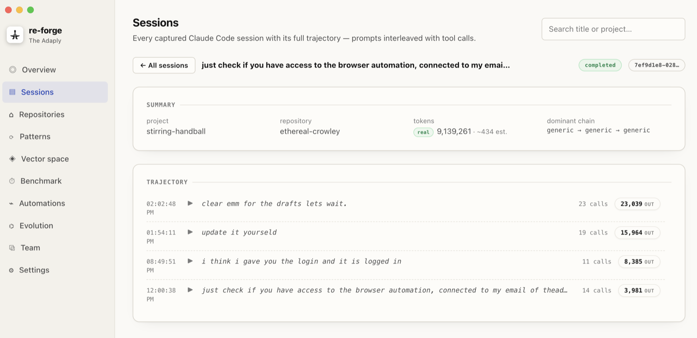
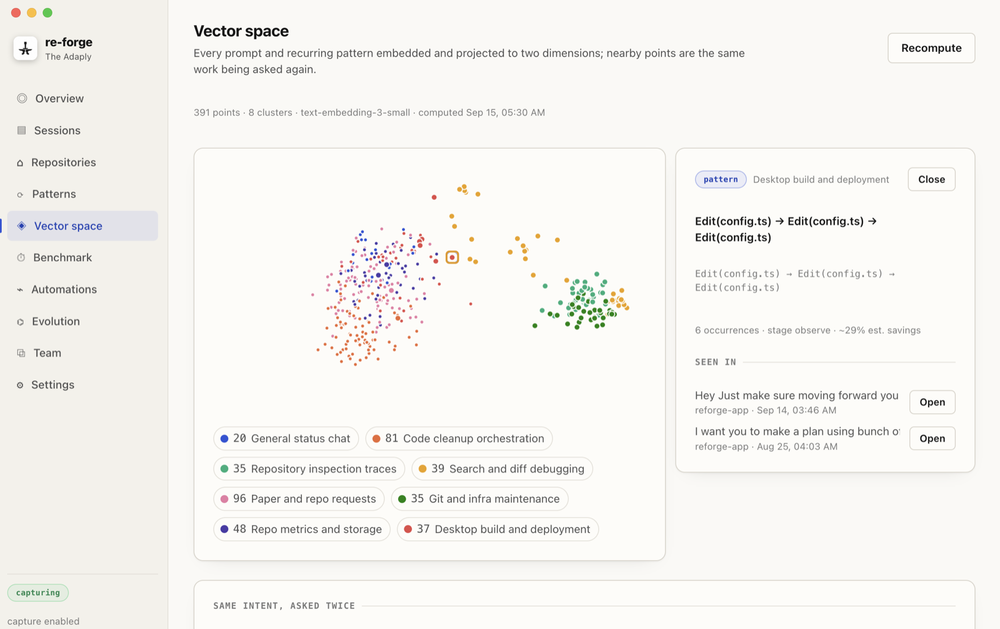
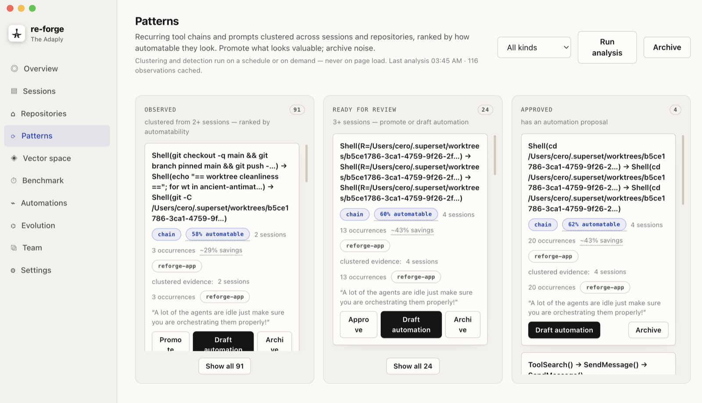
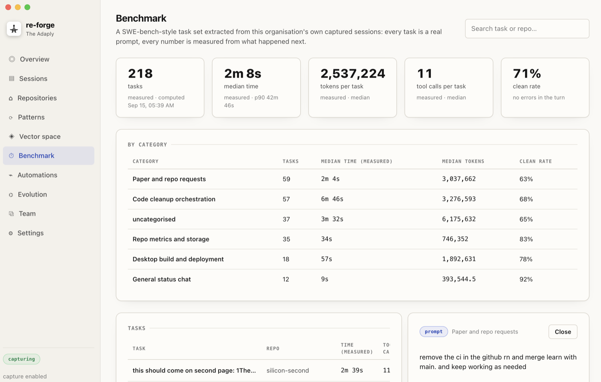

re-forge (The Adaply) is the startup I am building. It captures two to three weeks of a team's Claude Code sessions, finds the moments where people had to ask for the same thing twice, works out why, and turns the recurring fixes into skills the agent carries from then on. Because that produces a lot of skills, it also builds a benchmark out of the team's own real prompts to check that each one actually helps. The research question underneath it, whether what an agent learns from its own failures inside one lifetime should be inherited or measured separately, is the subject of our paper Adaptation Without Inheritance, joint work with Shine Gupta, submitted to NeurIPS 2026.
This page is a work in progress. The full writeup of how the pipeline works, stage by stage, is being written right now. The paper link above and the screenshots below are final.
The product, in four screens




Adaptation Without Inheritance
PDF
re-forge, by The Adaply
theadaply.com